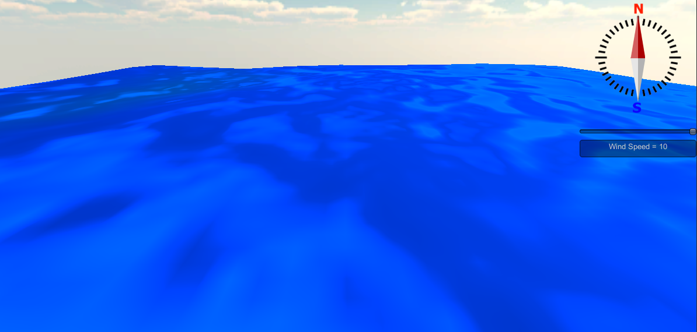

|
 |
Unity3D is where I began my journey into game development. Between school, my internship, and my job, I've been working in the Unity Stack for almost 4 years. However, I consider myself more of an engine guy. I have spent about six months getting acquainted with Unreal Engine 4, and I spend a lot of time digging into engine architecture, and rewriting my own game engine.
I love computer graphics. Linear Algebra is the end of math I've always had a knack for, and there's something particularly rewarding about writing code that draws onto the screen. My most recent projects include working on understanding the Dual Contouring terrain rendering algorithm, and continuing to improve my Ocean Surface Simulation.
My education is in C++, but from the beginning, I taught myself c#, and consider my c# skills to be about on-par with my c++ skills. My goal as a programmer, though, is to not really care about what language I use, but to be a master of algorithms. I love competing in coding competitions like ICPC, and doing game jams like Ludum Dare. Apart from Computer Graphics, my greatest passions are for simulation and procedural generation.